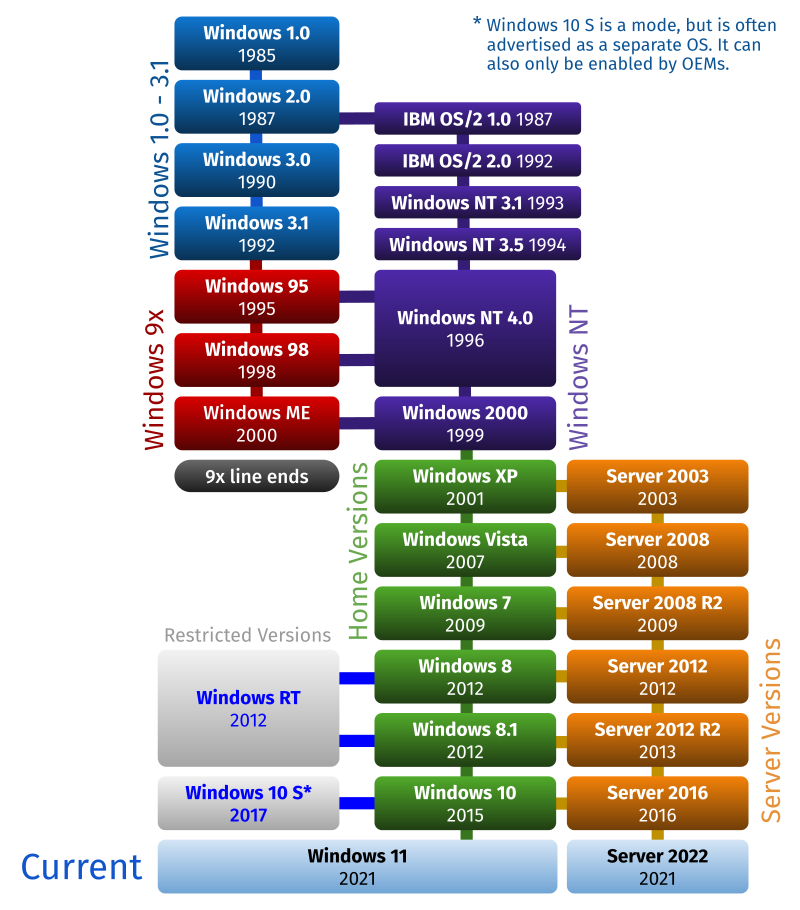

Gaben Logan Newell Career
- Microsoft Gaben got a job at Microsoft as a producer for 13 years after he dropped out of Harvard University. he helped to produced the first three version of windows which is Windows 1.01, 1.02, 1.03, 1.04, 2.01, 2.03, 2.10, 2.11, 3.10, NT 3.1, 3.11, 3.2, NT 3.5, NT 3.51.
- Valve Gaben is inspired by his colleague, who left Microsoft to work on the game called "Quake" at id software. So Gaben and another employee Mike Harrington, left Mircrosoft to found the video game company which "Valve" on Auggust 24,1996. Gaben and Mike funded the devolopement of the first Valve game which is a first person shooter game called "Half-Life" in 1988 which is a huge success.


After that Mike left Valve in 2000. Gaben gave Valve no deadline and unlimited budget to develop "Half-Life 2". Meanwhile, he spent several months developing "Steam" which is a digital distribution service for games. By 2011 Steam controlled 50 to 70% of the market for downloaded PC games and is the Map source of revenue for Valve.

This is a picture of Mike Harrington (Left) and Gaben Logan Newell (Right)